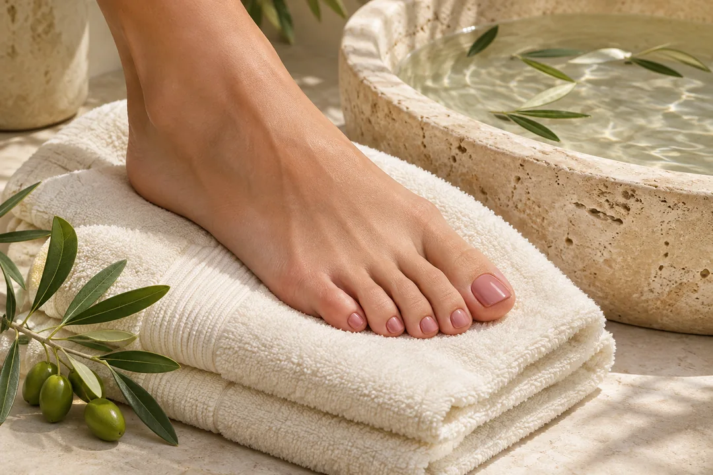
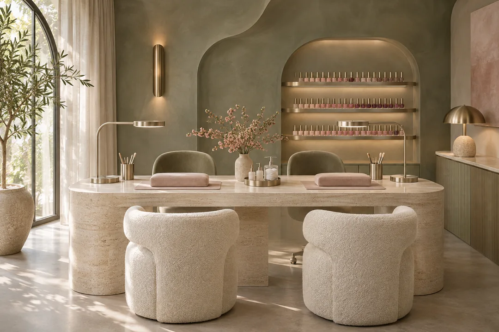
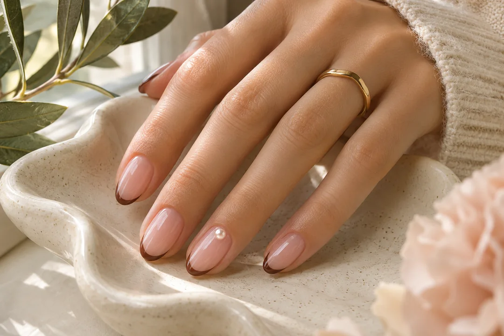
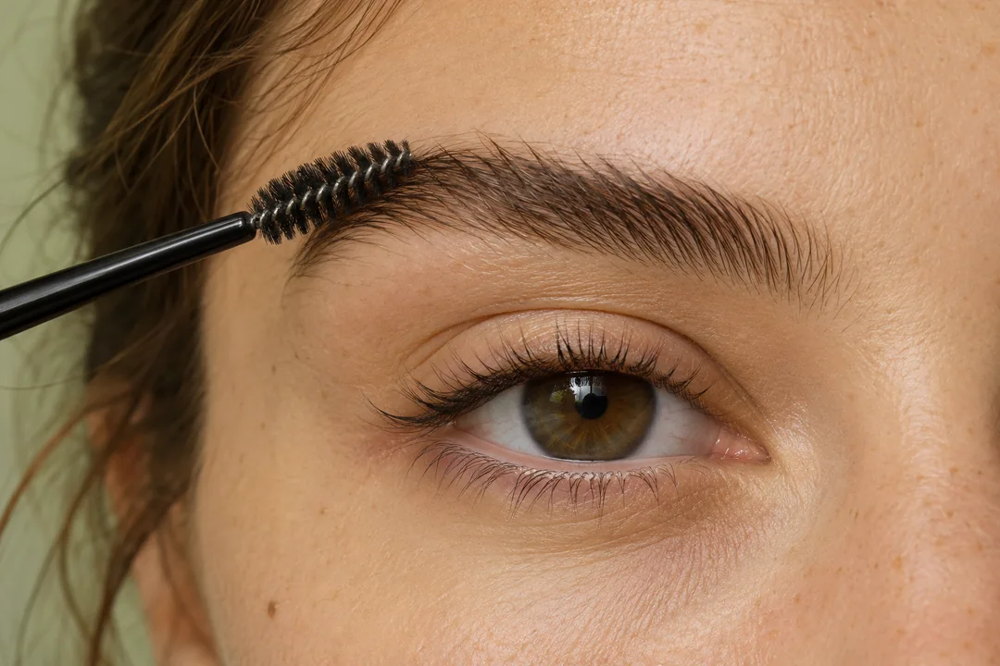

Маникюр
Выберите уход без покрытия, обычный лак или гель-лак.
Независимый дизайн-концепт. Фото сгенерированы для макета. Запись работает в демонстрационном режиме.
Официальный сайтВыберите уход без покрытия, обычный лак или гель-лак.

Уход за стопами и пальцами с покрытием или без него.

Маникюр и педикюр выполняются одновременно двумя мастерами.

Наращивание и коррекция формы с подбором покрытия.

На странице филиала можно узнать о доступных услугах мастера.
Завершающий уход за кожей и кутикулой после маникюра.
Выберите категорию. Перечень основан на открытой информации о салоне. Актуальные цены и запись доступны на официальной странице филиала.
Сгенерированные иллюстрации показывают возможные результаты и атмосферу.
Показано 12 из 12
Маникюр
Форма ногтей, обработка кутикулы и завершающий уход.
Маникюр
Классическое покрытие с подбором оттенка.
Маникюр
Удаление кутикулы, форма и стойкое однотонное покрытие.
Маникюр
Мягкое оформление ногтей без обработки кутикулы, с лаком по желанию.
Педикюр
Обработка пальцев и стоп без цветного покрытия.
Педикюр
Уход за стопами и пальцами, затем нанесение цвета.
Педикюр
Аппаратный уход за стопами с дисковой насадкой.
Моделирование
Моделирование длины и формы с покрытием.
Моделирование
Восстановление формы и архитектуры, обновление покрытия.
Комплексы и уход
Два мастера одновременно работают с руками и стопами.
Комплексы и уход
Средства для кожи рук и завершающий уход за кутикулой.
Комплексы и уход
Форма бровей и подходящая интенсивность оттенка. Доступные процедуры уточняются у филиала.
Метро «Бульвар Дмитрия Донского». На странице филиала указаны часы работы с 10:00 до 22:00.
ООО «УК «ПАЛЬЧИКИ», ИНН 7701734820. Юридический адрес управляющей компании: Москва, ул. Старая Басманная, 25. Юридическая информация о конкретном филиале уточняется у салона.
Филиал предлагает совмещённый маникюр и педикюр. Состав и условия уточняются на официальной странице.
Актуальные цены и продолжительность процедур опубликованы на странице московского филиала.
Это сгенерированные иллюстрации к услугам и визуализация интерьера для дизайн-концепта.